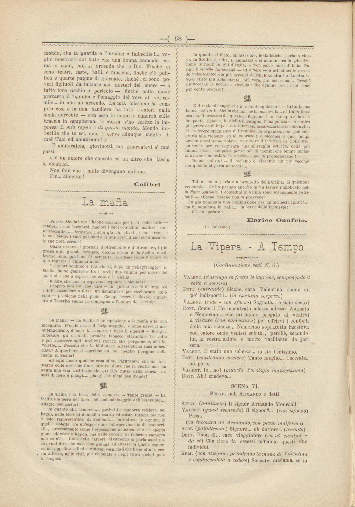

Povera Sicilia! me l'hanno conciata per il dì delle feste — mafiosi i suoi borghesi, mafiosi i suoi contadini, mafiosi i suoi aristocratici..... fors'anco i suoi glauchi oliveti, i suoi aranci e le sue biade, i suoi garofani e le sue rose, il suo cielo azzurro, le sue notti serene!
Quale orrore! i giornali d'oltremonte e d'oltremare, i più grossi e di grande formato, dicono corna della Sicilia e sol levano una quistione di attualità, palpitante come il cuore di una ragazza a quindici anni.
I signori Sonnino e Franchetti, dopo un pellegrinaggio in Sicilia, fanno gemere sotto i torchi due volumi per mezzo dei quali si viene a sapere che cosa è la Sicilia.
E dire che non lo sapevano neanche i Siciliani!
Proprio non c'è che dire — in questo secolo di lumi s'è voluto accendere a forza un fiammifero per rischiarare un'i sola — problema nella quale i Ciclopi fecero il diavolo a quat tro e Teocrito suonò la zampogna all'ombra dei carrubi.
La mafia! — La Sicilia è un'equazione e la mafia è la sua incognita. D'onde nasce il brigantaggio, donde nasce il ma nutengolismo, d'onde la camorra? Ecco il quesito — Bisogna inforcare gli occhiali, prender tabacco, starnutare tre volte e poi ricorrere agli archivii storici, alle pergamene, alle ta volette,.... Peccato che la biblioteca Alessandrina siasi abbru ciata? A quest'ora si saprebbe un po' meglio l'orgine della mafia in Sicilia!
Ad ogni modo qualche cosa si sa. Figuratevi che un Ari starco colle orecchie fuori misura disse che la Sicilia non ha avuta una vita costituzionale.... O Clio musa della storia, ve stiti di nero e piangi.... piangi che n'hai ben d'onde!
La Sicilia è la terra della camorra — Tante grazie. — La Sicilia è la terra del furto, del malandrinaggio, dell'assassinio.... Adagio per carità!
In quanto alla camorra.... pardon! La camorra esisteva nei bagni, nelle isole di domicilio coatto ed esiste tuttora ma non è solo rappresentata dai Siciliani.... tutt'altro! In ognuna di quelle isolette c'è un'esposizione interprovinciale di camorri sti.... precisamente come l'esposizione artistica che s'è aperta giorni addietro a Napoli, ma nelle carceri di Palermo camorra non ce n'è — fuori delle carceri, di camorra si parla assai po co; vuol dire che essa non giunge all'altezza di quella camor ra in cappello a cilindro e stivali verniciati che tiene alta la cre sta altrove, nelle città più rinomate e negli stati sociali pun to fangosi.
In quanto al furto, all'assassinio, le statistiche parlano chia ro. In Sicilia si ruba, si ammazza e si amministra la giustizia come in molti luoghi d'Italia..... Non parlo fuori dall'Italia. Pa rigi, il cervello dell'umanità — ed è vero — è attualmente orren do palcoscienico die più orrendi delitti. E Londra? A Londra la feccia esiste più abbondante, più vera, più assassina.... Perché rimbeccarsi le accuse a vicenda? Che ognuno lavi i suoi cenci per conto proprio!
E il malandrinaggio? e il manutengolismo? — Istituite una buona polizia in Sicilia che non ne ha mai avuta... e l'Italia forse neanco. Il processo del questore Bignami è un esempio chiaro e lampante. Ebbene, in Sicilia il bisogno d'una polizia si fa sentire più grave e più imperioso. I Borboni accarezzarono la sbirraglia, se ne fecero strumento di tirannide, la organizzarono per ado prarla alla violenza ed al sopruso; e siccome a quei tempi nessun onest'uomo voleva esercitare il mestiere di poliziotto, ne venne per conseguenza una sbirraglia estratta dalla più infima classe, composta per lo più di uomini che un tempo innan zi avevano molestato la società.... poi la proteggevano!
Buona polizia! — il reclamo è divenuto un po' vecchio ma quando si parla ai sordi!....
Taluni hanno parlato a proposito della Sicilia; di quistione economica. Ne ho parlato anch'io in un lavoro pubblicato nel la Nuova Antologia. I contadini in Sicilia sono scarsamente retri buiti — ebbene, perché non si provvede?
Fu già nominata una commissione per un'inchiesta agraria.... ma fu nominata in Italia.... la terra delle inchieste!
C'è da sperare?